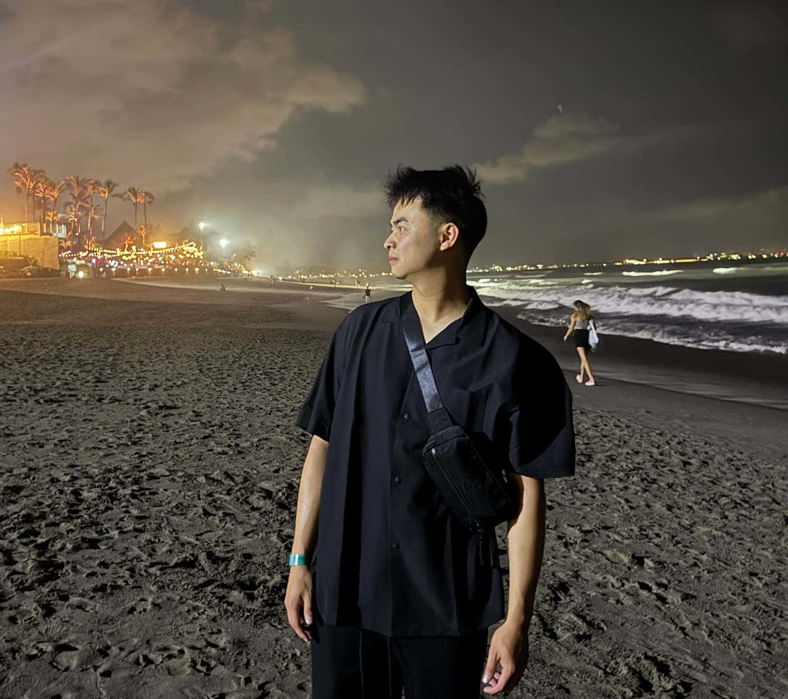

Skills



I graduated from the University of British Columbia in Biomedical Engineering, specializing in biomechanics and biomaterials. I have 9+ years of coding experience in various programming languages such as C, C#, R, MATLAB and more. I am curious, adaptable and a quick learner.
My current project is actually building this website, but my interest in programming ultimately began in highschool when I made a minigame:
Click here to play
In my free time, I love to play hockey, run, and ski in the winter. I also enjoy spending time biking with my friends in the summertime.


Hip Joint Range of Motion in Cerebral Palsy Patients
In 2022, I investigated the decreased hip flexion and knee inversion apparent in Cerebral Palsy patients using 3-D kinematics. This project provided me with valuable experience applying knowledge acquired in academia to hands-on experimentation in order to generate interpretable results.
Costco:
In the summer of 2021, I worked a seasonal position at Costco as a stockboy. I would collaborate with 1-3 people to restock different sections of the warehouse. Through this experience, I developed teamwork skills that would help me communicate effectively to achieve success.
Web Development
In the summer of 2022, I began building this website from the ground up. I began by reading some introductory articles about HTML and CSS, then once I had the basics down I started to make more and more progress throughout the year. I learned so much while self learning this material about everything from displaying "Hello World" on a blank page to publishing the website to Github Pages.
Vancouver Back Institute:
In 2023, I began a part-time position as a Chiropractic Assistant. Due to my previous experience with web development I was asked to take over the company website, and set up a Google Business profile. Thus, my role gradually transitioned into more of an administrative role
Orthopaedic Implant
In 2021, I collaborated with a team to design an orthopaedic femur implant and created a virtual model of the design on which we ran stress and deformation simulations (Solidworks). Through this experience, I further developed my skills in both Solidworks as well as the engineering design process.
Krassioukov Lab, ICORD
In 2024, I took on a work-learn position at ICORD, where I would gain insight into the research industry and hands on experience with repairing electronic equipment. I also further developed my coding skills through MATLAB and R, writing scripts to extract, analyze and present data in a clean figure.